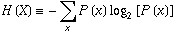
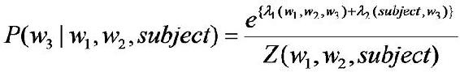

[我们在投资时常常讲不要把所有的鸡蛋放在一个篮子里，这样可以降低风险。在信息处理中，这个原理同样适用。在数学上，这个原理称为最大熵原理(the maximum entropy principle)。这是一个非常有意思的题目，但是把它讲清楚要用两个系列的篇幅。]
前段时间，Google 中国研究院的刘骏总监谈到在网络搜索排名中，用到的信息有上百种。更普遍地讲，在自然语言处理中，我们常常知道各种各样的但是又不完全确定的信息，我们需要用一个统一的模型将这些信息综合起来。如何综合得好，是一门很大的学问。
让我们看一个拼音转汉字的简单的例子。假如输入的拼音是"wang-xiao-bo"，利用语言模型，根据有限的上下文(比如前两个词)，我们能给出两个最常见的名字"王小波"和"王晓波"。至于要唯一确定是哪个名字就难了，即使利用较长的上下文也做不到。当然，我们知道如果通篇文章是介绍文学的，作家王小波的可能性就较大；而在讨论两岸关系时，台湾学者王晓波的可能性会较大。在上面的例子中，我们只需要综合两类不同的信息，即主题信息和上下文信息。虽然有不少凑合的办法，比如：分成成千上万种的不同的主题单独处理，或者对每种信息的作用加权平均等等，但都不能准确而圆满地解决问题，这样好比以前我们谈到的行星运动模型中的小圆套大圆打补丁的方法。在很多应用中，我们需要综合几十甚至上百种不同的信息，这种小圆套大圆的方法显然行不通。
数学上最漂亮的办法是最大熵(maximum entropy)模型，它相当于行星运动的椭圆模型。"最大熵"这个名词听起来很深奥，但是它的原理很简单，我们每天都在用。说白了，就是要保留全部的不确定性，将风险降到最小。让我们来看一个实际例子。
有一次，我去 AT&T 实验室作关于最大熵模型的报告，我带去了一个色子。我问听众"每个面朝上的概率分别是多少"，所有人都说是等概率，即各点的概率均为1/6。这种猜测当然是对的。我问听众们为什么，得到的回答是一致的：对这个"一无所知"的色子，假定它每一个朝上概率均等是最安全的做法。（你不应该主观假设它象韦小宝的色子一样灌了铅。）从投资的角度看，就是风险最小的做法。从信息论的角度讲，就是保留了最大的不确定性，也就是说让熵达到最大。接着，我又告诉听众，我的这个色子被我特殊处理过，已知四点朝上的概率是三分之一，在这种情况下，每个面朝上的概率是多少？这次，大部分人认为除去四点的概率是 1/3，其余的均是 2/15，也就是说已知的条件（四点概率为 1/3）必须满足，而对其余各点的概率因为仍然无从知道，因此只好认为它们均等。注意，在猜测这两种不同情况下的概率分布时，大家都没有添加任何主观的假设，诸如四点的反面一定是三点等等。（事实上，有的色子四点反面不是三点而是一点。）这种基于直觉的猜测之所以准确，是因为它恰好符合了最大熵原理。
最大熵原理指出，当我们需要对一个随机事件的概率分布进行预测时，我们的预测应当满足全部已知的条件，而对未知的情况不要做任何主观假设。（不做主观假设这点很重要。）在这种情况下，概率分布最均匀，预测的风险最小。因为这时概率分布的信息熵最大，所以人们称这种模型叫"最大熵模型"。我们常说，不要把所有的鸡蛋放在一个篮子里，其实就是最大熵原理的一个朴素的说法，因为当我们遇到不确定性时，就要保留各种可能性。
回到我们刚才谈到的拼音转汉字的例子，我们已知两种信息，第一，根据语言模型，wang-xiao-bo 可以被转换成王晓波和王小波；第二，根据主题，王小波是作家，《黄金时代》的作者等等，而王晓波是台湾研究两岸关系的学者。因此，我们就可以建立一个最大熵模型，同时满足这两种信息。现在的问题是，这样一个模型是否存在。匈牙利著名数学家、信息论最高奖香农奖得主希萨（Csiszar）证明，对任何一组不自相矛盾的信息，这个最大熵模型不仅存在，而且是唯一的。而且它们都有同一个非常简单的形式 -- 指数函数。下面公式是根据上下文（前两个词）和主题预测下一个词的最大熵模型，其中 w3 是要预测的词（王晓波或者王小波）w1 和 w2 是它的前两个字（比如说它们分别是"出版"，和""），也就是其上下文的一个大致估计，subject 表示主题。


我们看到，在上面的公式中，有几个参数 lambda 和 Z ，他们需要通过观测数据训练出来。
最大熵模型在形式上是最漂亮的统计模型，而在实现上是最复杂的模型之一。我们在将下一个系列中介绍如何训练最大熵模型的诸多参数，以及最大熵模型在自然语言处理和金融方面很多有趣的应用。